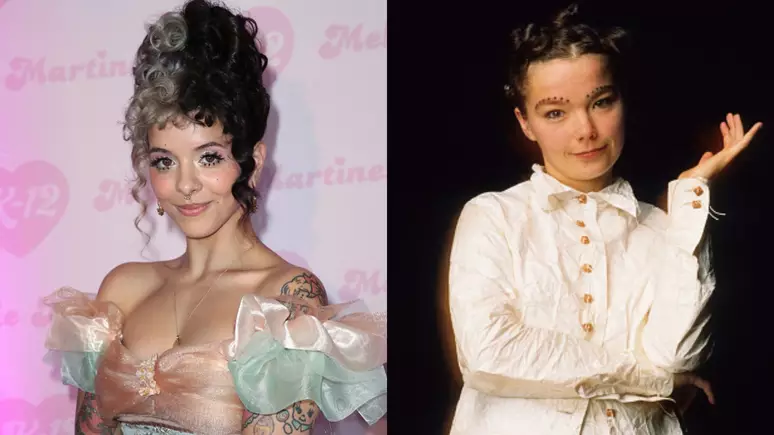

🌸 Melanie Martinez e as acusações de “COPIAR” Björk
Publicado em 22 de fevereiro de 2023

Em 2023, quando o álbum Portals começou a ser apresentado ao público, algumas comparações entre Melanie Martinez e a cantora islandesa Björk ganharam força nas redes sociais.
Fãs apontaram semelhanças principalmente nas maquiagens, criaturas fantásticas, elementos naturais e referências visuais presentes na divulgação de Portals.
A comparação dividiu o fandom. Enquanto algumas pessoas acreditavam que existiam referências muito semelhantes, outras defendiam que os elementos fazem parte de uma estética surreal e fantástica utilizada por diferentes artistas.
Apesar das discussões nas redes sociais, não houve uma decisão oficial estabelecendo que Melanie Martinez tivesse cometido plágio. A polêmica permaneceu principalmente como uma discussão entre fãs e internautas.